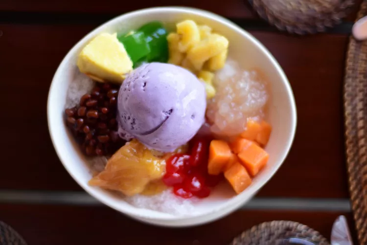

Halo-Halo
Home

What is Halo-Halo?
Halo-Halo is a Filipino dessert that consists of ube ice cream, shaved ice, condensed milk, jello, beans, and fruit.
It is best enjoyed during the Summer months to help you cool down! It is a very free form dish so there's no right
way of preparing it.
Ingredients
- Ube Ice Cream
- Shaved Ice
- Red Bean
- Evaporated Milk
- Flan
- Jello/Candied Fruit
Steps
- Add shaved ice to the bottom
- Layer your toppings as you like. For it would be the fruits
- Add some more shaved ice and ube ice cream
- Add red beans and flan
- Add more shaved ice
- Pour Evaporated milk over the top and let it sink to the bottom
- Add ube ice cream again and the rest of your toppings